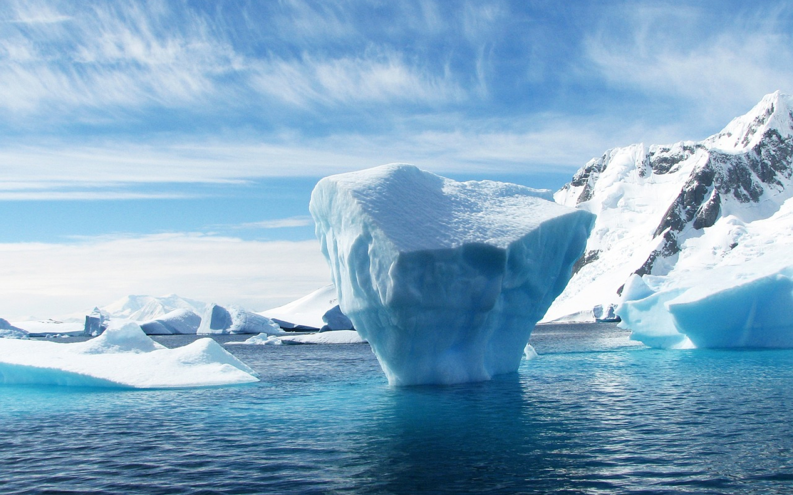
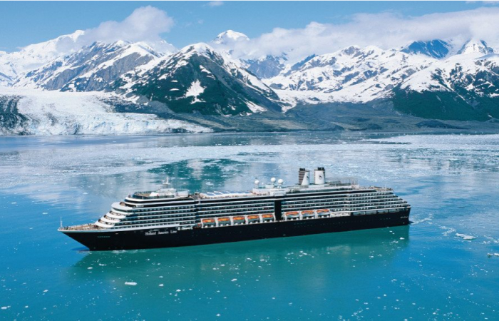
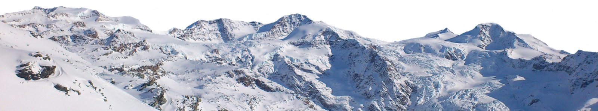
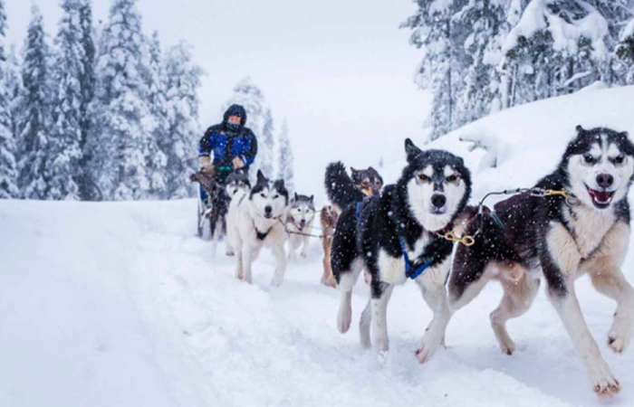
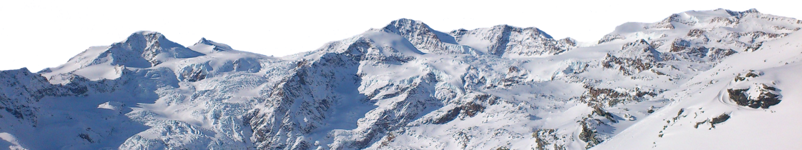
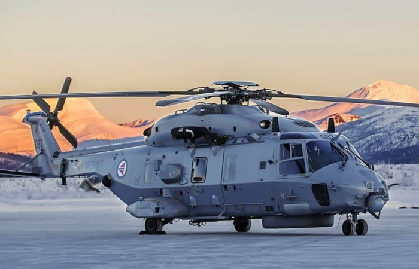
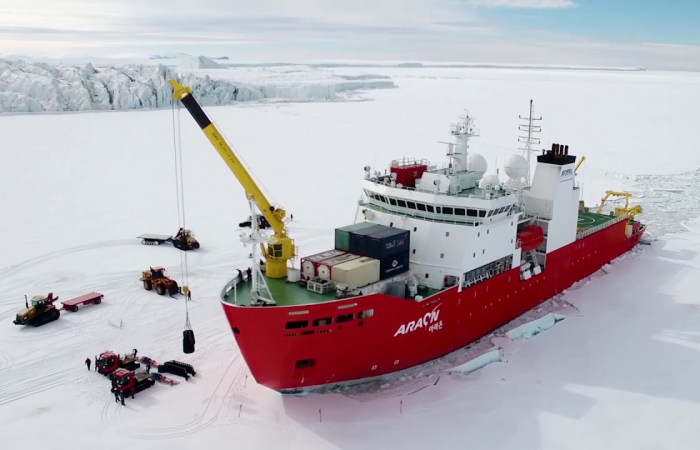

directions
method1
-

-
- cruise tour
-
The most common way for Europeans to travel to the
North Pole is to comfortably cruise through the Arctic Ocean.
You don't have to visit the North Pole because you can still enjoy the view there.
In the case of Norway, people travel from the capital Oslo to Rungie Urban in Svalbard,
and then take a cruise around the islands to the North Pole.

method2
-

-
- snow sledding trip
- A trip that is highly difficult and experiences extreme environments
is a trip by snow sledding toward the North Pole. In Canada,
they travel by light aircraft to the northernmost resort route,
then to the Eureka camp, and then use snow sledding to
reach the North Pole over a period of more than two months.

method3
-

-
- helicopter tour
- The most expensive helicopter trip in Greenland is to take an Airbus from the capital
Copenhagen to Kangaroo Suak Airport in West Greenland, and back to Kangaroo Suak
A small Dash 8 light aircraft travels through small airports in West and East Greenland
to explore the surrounding villages and enjoy hiking.
method4
-

-
- sharp travel line
- If you went to the Arctic, if you think we have to take the Arctic points,
they should travel to the ice and travel line.I feel like 90 degrees in the ice.
When we reach the Arctic, it's not so long, I put it on the camera
It's good.